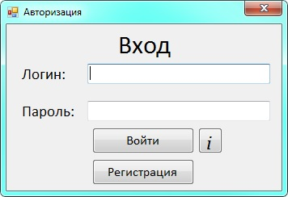
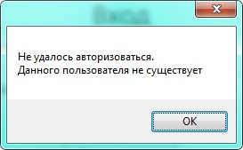
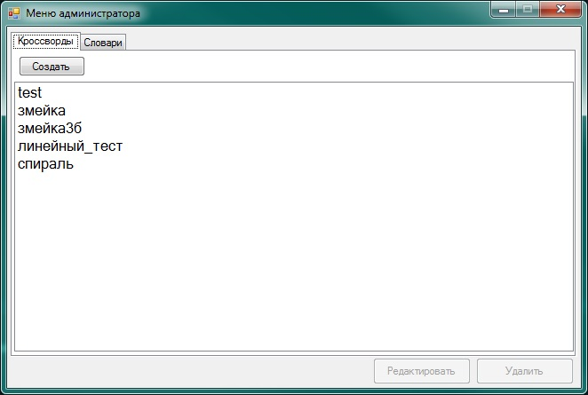
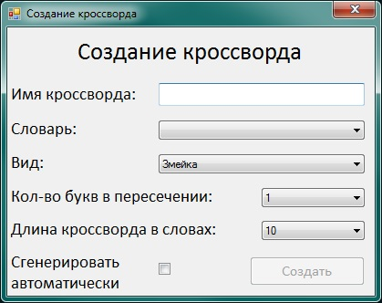
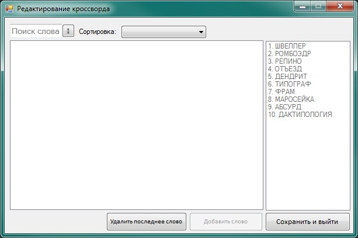
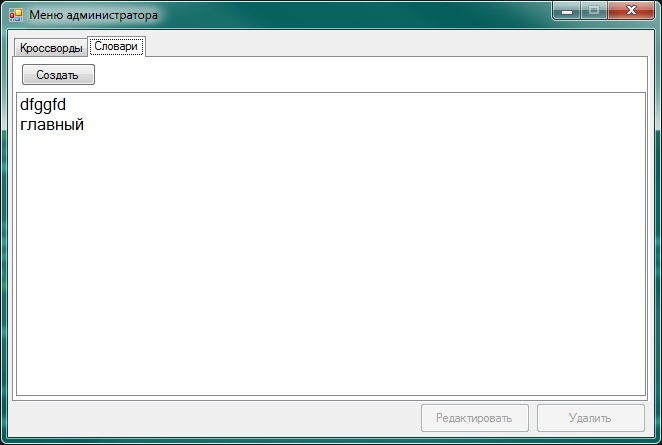
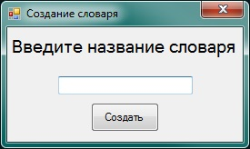
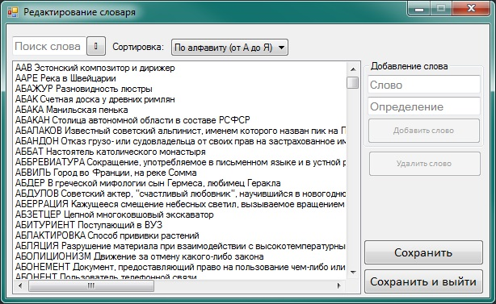
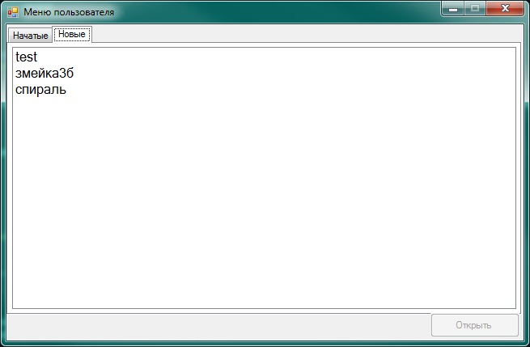
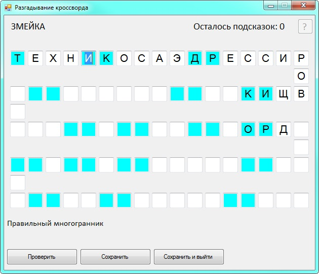

Линейный кроссворд
Введение
Меню администратора
Меню игрока
Завершение работы
Линейный кроссворд
Введение
Линейный кроссворд – вид кроссвордов, в которых, как следует из названия, пересечение слов представляет собой линию (то есть цепь). Поэтому второе распространенное название – чайнворд.
Данная программа, имея весь необходимый функционал, позволяет пользователю заниматься разгадыванием чайнворда.
Для корректной работы программной система требуется поддержка операционной системой яхыка C# - должен быть предустановлен .NET Framework. Программа совместима с операционной системой Windows 10.
Системные требования: родите потом сюда ченить
Авторизация, запуск программы
Данная программная система состоит из фактически двух частей - двух пользователей: адмистратора и игрока. При запуске программной системы появляется окно авторизации, представленное на рисунке. В поля "Логин" и "Пароль" необходимо ввести данные пользователя. При нажатии кнопки "Регистрация" программа создаст нового пользователя с указанными данными.

При нажатии кнопки "Войти", если данные введены верно, система определяет права пользователя и переходит для работы в соответствующее меню пользователя - администратора или игрока. При неверно введенных данных или же при
попытке создать уже зарегистрированного пользователя система выдаст сообщение об ошибке.

Основными общесистемными функциями являются:
- авторизация пользователя в системе (ввод логина/пароля);
- аутентификация пользователя в системе, настройка интерфейса пользователя на заданную роль;
- визуализация процессов работы с кроссвордом;
- контроль количества взятых подсказок;
- проверка правильности разгадывания кроссворда.
К функционалу меню администратора можно отнести:
- настройка параметров кроссворда при создании;
- составление(в т.ч. автоматическая генерация)/редактирование кроссворда;
- сохранение/загрузка кроссворда в файл заданной структуры;
- работа со словарями понятий.
Функции, доступные пользователю-игроку:
- загрузка кроссворда из файла;
- разгадывание кроссворда с организацией системы подсказок;
- сохранение кроссворда в файл.
Меню администратора
В меню администратора доступно две вкладки - кроссворды и словари.
Кроссворды
В данной вкладке содержаться все доступные системе кроссворды, имеется возможность создать новый, редактировать/удалить уже существующий.

Создать кроссворд
Для создания кроссворда нужно нажать кнопку "Создать", после чего откроется окно с указанием необходимых данных:
- имя кроссворда;
- используемый словарь;
- один из трех видов отображения кроссворда;
- количество букв в пересечении слов;
- количество слов в кроссворде;
- выбор ручной или автоматической генерации.

При выборе автоматической генерации кроссворда он будет сгенерирован и сохранен автоматически.
При ручной генерации кроссворда откроется форма редактирования кроссворда, где администратору нужно будет добавлять слова.
Редактирование кроссворда
При выборе кроссворда и нажатии кнопки "Редактировать" откроется форма его редактирования.
Форма редактирования кроссворда состоит из списка слов, доступных для добавления в кроссворд на текущем шаге его создания - отображаются те слова, которые начинаются на буквы пересечения с концом
последнего на данный момент слова в кроссворде. Имеется возможность поиска слова по буквам, и сортировка по алфавиту и размеру. Есть возможность удалить последнее добавленное в кроссворд слово.
Кнопка "Добавить слово" добавляет выбранное пользователем слово в конец чайнворда. Необходимое кол-во слов в кроссворде - значение, указанное при его создании.

Удалить кроссворд
При нажатии кнопки "Удалить" система удалит выбранный администратором кроссворд
Словари
В данной вкладке есть возможность создать новый словарь, а также изменить или удалить уже существующий. Для возможности нажать на кнопки "Редактировать" или "Удалить" администратор должен сначала выбрать словарь.

Создать словарь
При нажатии кнопки "Создать" откроется форма создания словаря, где необходимо указать его название. После чего администратору откроется форма его редактирования - для заполнения только что созданного словаря.

Редактирование словаря
Функционал, доступный администратору при работе со словарем в форме редактирования словаря
- поиск слова в словаре по введенным администратором буквам (маске);
- отсортировать отображаемый словарь по алфавиту или размеру слов;
- добавить новою позицию в словарь - слово с определением;
- удалить выбранное слово с определением из словаря.
- сохранить словарь в его текущем состоянии

Удалить словарь
При нажатии кнопки "Удалить" программа удалит выбранный администратором словарь.
Меню игрока
Функционал игрока заключается в возможности разгадывать кроссворды. Меню пользователя-игрока включает в себя две вкладки - уже однажды открытые/начатые пользователем кроссворды, сохраненные в процессе разгадывания, и новые-нетронутые.

Чтобы начать разгадывать новый или уже начатый кроссворд, необходимо выбрать его в списке доступных и нажать кнопку "Открыть", после чего откроется форма разгадывания кроссворда.

Для того, что вводить слово, пользователю необходимо нажать курсором на одно из окошек ввода буквы. Цветом выделены буквы-пересечения между словами, если поставить курсор туда, пользователю отобразиться определение загаданного слова.
При нажатии кнопки вопроса в правом верхнем углу активируется подсказка - подсказка записывает в текущее окошко правильную букву, количество доступных подсказок зависит от размера кроссворда, и если они закончатся, воспользоваться
ими будет больше нельзя. Кнопка "Проверить" показывает игроку, насколько правильно в процентах решен текущий кроссвоврд, "Сохранить" - сохраняет текущий прогресс в кроссворде.
Завершение работы
Кнопка "Соханить и выйти" в тех местах, где она доступна, сохраняет текущий прогресс пользователя в соответствующем месте и закрывает текущую форму. Для выхода из формы без сохранения необходимо нажать стандартную кнопку закрытия окна Windows "Х".
Лоя полного завершения работы программы необходимо с помощью вышеперечисленных действий вернуться к форме регистрации, после чего закрыть ее кнопкой "Х", и программа завершит свою работу.